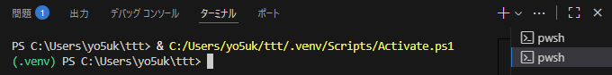
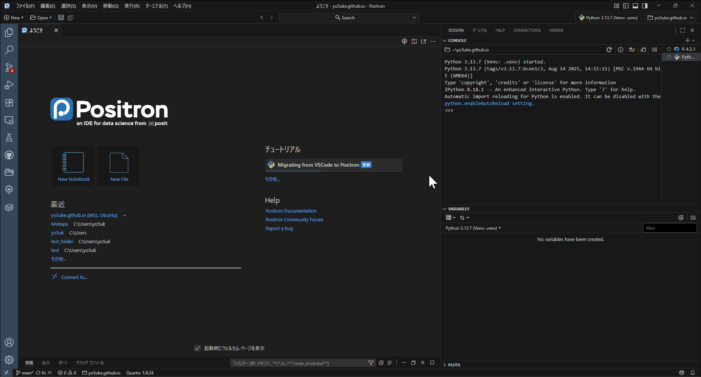

はじめに
みなさん、仮想環境、使っていらっしゃいますでしょうか。
プログラミングにおける仮想環境とは、プロジェクトごとに依存パッケージを切り分けて管理できる仕組みです。これにより、他のプロジェクトやシステム全体に影響を与えず、再現性の高い開発環境を保つことができます。研究や開発を長期に続ける上で、安定した環境を構築するために欠かせないものです。
例えば、仮想環境をしない場合とする場合で、以下のような違いがあります。
【仮想環境なし】
- 全プロジェクトで共通のRやPythonのパッケージ（同じバージョン）を使用する。
- あるプロジェクトのためにパッケージを更新すると、他のプロジェクトで動かなくなるリスクがある。
- チームで共有するとき、同じ環境を再現するのが難しい。
【仮想環境あり】
- プロジェクトごとにパッケージのバージョンを使い分ける。
- 依存関係を切り分けることで、環境が壊れるリスクを減らせる。
- 設定ファイルを共有すれば、他の人も同じ環境を簡単に再現できる。
本ページでは、これらの違いについて説明しつつ、実際に導入するためのコードも掲載しますので、仮想環境になじみのない方から、知ってはいるけど毎度どうやるんだっけ…となってしまう方までご参考にしていただければと思います。
仮想環境について
仮想環境のポイントは、上で書いた通りです。もう少し詳しく書きます。
例えば、3年前のRと現在のRでは、バージョンも利用できるパッケージも大きく異なります。もしRやパッケージを常に最新に保っていた場合、3年前に書いたコードがそのまま期待通りに動作するとは限りません。計算方法が変わっていたり、古い関数が削除されていたりして、過去の研究を再現できない可能性があるのです。
この点、仮想環境では「バージョンごとに環境を保存する」ことで問題に対応できます。例えば、あるパッケージの現在のバージョンが1.2.3だとしても、3年後には1.5.4へ更新されているかもしれません。仮想環境を使えば「このプロジェクトではバージョン1.2.3を使用していますよ」とファイルに記録し、後からその環境を再現することができるのです。
こうすることで、研究当時の環境を正確に呼び出せるため、バージョン変更に伴うトラブルを避け、長期的に安定した再現性を確保できます。
ちなみに本ページではRに関してはrenv、Pythonに関してはvenvを使用します。どちらもメジャーな仮想環境であり、これを使えていれば問題ないと思います。
Pythonに関してはcondaなど他のメジャーな仮想環境もありますが、本ページを見てくださっている方であれば個人的にはvenvで十分だと考えています。これは目的にもよりますので、興味がある方は他の仮想環境も調べてみてください。
renv
ではRの方の説明から始めます。
renvは、R プロジェクトごとに使用するパッケージの情報を ロックファイル（renv.lock） に記録し、必要に応じて同じ環境を再現できるようにするパッケージです。このロックファイルが「このパッケージのバージョン1.2.3を使用していますよ」ということを保存しているということですね。
ライブラリはグローバル環境とは分離され、プロジェクト専用のフォルダに保存されます。これにより「どのパッケージを、どのバージョンで使っていたか」が明示され、数年後でも同じ環境を復元することが可能になります。
もし仮想環境を使ったことがない方であれば、今あなたが使っているのがグローバル環境です。グローバル環境でパッケージをアップデートした場合、もれなくすべてのプロジェクトでパッケージのバージョンが更新されます。renvを使用していれば、そのプロジェクトについてだけバージョンが更新されるという仕組みです。
renvの始め方
始め方は極めて簡単です。
まずはプロジェクトを作成します。プロジェクトとは？という方であれば、RStudioユーザーの方であればこちら、Positronの方であればこちらをご参考になさってください。
そしたらコンソールで以下を実行します。
# renvをまだインストールしていない場合は先にこちらを実行
# install.packages("renv")
renv::init()renvを開始する、というわかりやすい関数ですね。するとワーキングディレクトリ内にrenvというフォルダと、.Rprofile、renv.lockファイルが作成されます。これで設定やらなにやらをしていますので、ファイルは消さないようにしてください。
後は通常通り作業を進めます。パッケージのインストールや、アップデートをしても、それはこのファイル内でのみ適用されます。
保存の仕方
作業を一通り終えたら、ロックファイルにパッケージのバージョンを記述しないといけません（もちろん自動でやってくれます）。以下を実行してください。
renv::snapshot()Do you want to proceed? [Y/n]:と出てきたらYを入力し、- Lockfile written to "~/yo5uke.github.io/renv.lock".と出てきたら保存完了です。
新しいパッケージを追加したらその都度スナップショットを実行してください。ちなみにインストールしただけでは記載の対象にならず、プロジェクト内のコードで使用したパッケージのみ記載されます。この点renvは賢いですよね。
環境の呼び出し方
例えばPCを変更して、環境が移ったとします。すると新しい環境ではパッケージが何もインストールされていない状態です。
しかしプロジェクトをGit経由等で新しい環境に移せたら、ロックファイルがありますので、その情報をもとに必要なパッケージをインストールすることが可能です。
renvパッケージがインストールされていない場合はしてから、以下の関数を実行します。
# install.packages("renv")
renv::restore()これでロックファイル内に記載されているパッケージが、バージョンを保ったまま新しい環境にインストールされます。これで前のPCと同じ環境が再現できるというわけです。
ちなみに新しいPCというわけではなくとも、GitHubにプロジェクトをアップロードしておけば、当然ロックファイルもGitHub上に保存されるわけですので、再度GitHubから引っ張ってくれば、ローカルから一度プロジェクトを削除しても後々再現ができるわけです。これは地味にうれしいですよね。
まとめ
init()、snapshot()、restore()の3つが使えれば、renvを使いこなせていると言えるでしょう。近年は再現可能な研究への需要が高まってきていますから、Rユーザーの方はぜひrenvを使ってみてください。
venv
Pythonは少々ややこしいと個人的に感じています1。
renvはR上で完結する一方、venvはPowerShellないしコマンドプロンプトを使う必要があるからです2。
それでは改めてvenvについて説明します。
venvはPythonに標準で付属している仮想環境ツールで、プロジェクトごとに独立したパッケージ環境を作成できます。
venvで作成した環境はプロジェクト内の.venvフォルダに保存され、そこにPython本体や必要なライブラリがインストールされます。そのため、システム全体のPythonに影響を与えることなく、プロジェクトごとにライブラリのバージョンを固定できます。
さらに、requirements.txtというファイルを用いれば、使用しているライブラリとそのバージョンを記録し、他の人や別の環境でも同じ構成を再現できます。これはRのrenv.lockに相当する役割です。
venvの始め方
それではvenv環境を作る手順に移ります。
VSCodeもしくはPositronの場合、まずプロジェクト（ワークスペース）を開いたのち、Ctrl + Shift + @でターミナルを開きます。
開けたら、以下を入力して実行します。
python -m venv .venvこれは独立したPython環境を.venvというフォルダに作るということを意味しており、.venvという名前で作成すると、VSCodeやPositronが自動的に「これを仮想環境だな」と認識し、インタープリタの候補に出してくれるので必須ではないですがおすすめです3。
しかし、環境を作るだけでは自動でアクティベートされません（最初は自動で起動しないということです）。
VSCodeの場合方法は2つあります。1つ目は簡単で、ターミナルを新しくするということです。ターミナルの右上に+ボタンがありますので、これを押して新しいターミナルを開きます。すると以下のような表示が出ますので、これでアクティベートされています。

頭に(.venv)と表示されていれば、アクティベートされています。
2つ目は、1つ目の方法でうまくいかなかったときにも有効な方法で、ターミナルに以下を打ち込んで実行します。
.venv/Scripts/activateこれでアクティベートされます4。上の画像と同じ表示になると思いますのでご確認ください。
Positronの場合は、ウィンドウ右上の「R 4.5.1」や「Python 3.13.7」と表示があるところからインタープリタを選択します。

「Venv: .venv」とあるものを選択すればvenv環境に移れます。こちらは簡単ですね。
ちなみに少し細かい話をすると、.venvは容量が大きい一方で、環境の再現自体はrequirements.txtのみで担保できるため、Gitには保存せず.gitignoreに.venv/と記載しておくのがよいと思います。そのため、後述しますが新しい環境では再度venv環境を作成してください。
保存の仕方
保存もターミナル上で行います（Pythonのコンソールではありません）。
ターミナルで以下を実行します。
pip freeze > requirements.txtこれは先述の通り、requirements.txtというファイルにパッケージ名とバージョンを保存します。まさにロックファイルと同じような感じですが、中身を見てみると、polars==1.33.1のように、非常にシンプルな形で記載されています。
作業が終わったら、適宜保存してください。
パッケージの呼び出し方
R同様、新しい環境に移行したら、このrequirements.txtファイルからパッケージをバージョンごと再現する必要があります。
新しい環境だとまだ.venvが存在しないと思うので、前と同じ方法でvenv環境を作成したのち、renv::restore()と同じような働きをする以下のコマンドを実行します。
pip install -r requirements.txt-rは「ファイルに書かれたリストを読む」という意味で、これでファイル内に記載されているパッケージがまとめてインストールできます。
まとめ
renvよりはやや複雑ですが、ターミナル上で仮想環境の作成から再現まで行うことができます。必要なのは以下の3つです。
python -m venv .venv
pip freeze > requirements.txt
pip install -r requirements.txtまとめ
今回は仮想環境のrenvとvenvについて簡単にご紹介しました。簡単にとはいうものの、エンジニアでもなければこれで十分ではないかと思っています。
仮想環境を活用しながら、再現可能な研究を進めていきましょう！
（余談：サムネイルの設定をミスったのですが、でかでかと.venvが表示されたので、これで良しとします！）